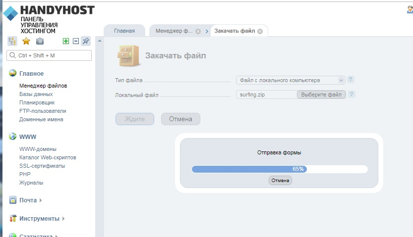
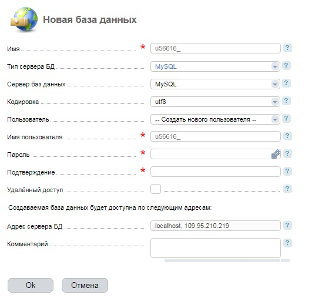
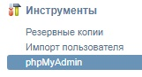
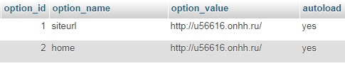
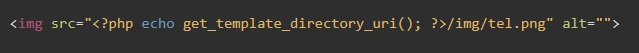
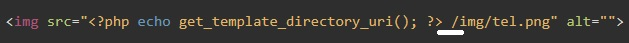

Заходим в папку с сайтом на OpenServer (туда куда устанавливали WordPress - OSPanel\domains\имя_сайта). Выделяем все что там есть и архивируем в zip. Обязательно в zip
Далее заходим в панель управления хостингом. Раздел Главная - Менеджер файлов. Здесь находим папку www, в ней видим папку с нашим доменом (у меня это было - u56616.onhh.ru) и заходим в нее. Скорее всего в этой папке будет распакован новенький WordPress. Удаляем его.
Теперь нам необходимо загрузить сюда наш архив с сайтом. Для этого кликаем на иконку "Закачать" , далее в открывшемся окне выбираем Выберите файл и указываем на наш архив с сайтом. Жмем ОК и ждем когда файл загрузится.
После того как файл загрузится он отобразится в менеджере файлов. Выделяем его и на панели жмем кнопку "Извлечь" . Сайт запросит куда необходимо распаковать архив, мы ничего не указывая жмем ОК.
Все, файлы распаковались. Архив из директории можно удалить.
Заходим в phpMyAdmin на OpenServer. Там находим нашу базу данных. Выделяем ее и в панели жмем кнопку "Экспорт" . После нажатия откроется страница экспорта БД. Ничего не меняя жмем "Вперед". откроется проводник, указываем любое место куда будет сохранен файл SQL. Этот файл нам необходимо будет импортировать на хостинг.
Но пока нам необходимо создать базу данных на хостинге. Для этого идем по меню Главное - Базы данных. Здесь уже будет создана какая-то база данных. Ее удаляем. После того как база удалилась, жмем кнопку "Создать". Откроется окно создания базы данных
Какие поля тут надо заполнить:
После того как все заполнили жмем ОК и ждем пока база не создастся. После того как база создалась, записываем в тот же блокнот куда записывали пароль имя нашей базы и имя пользователя.
Теперь можно импортировать наш файл SQL Для этого в панели управления хостингом идем по меню: Инструменты - phpMyAdmin
В окне авторизации вводим наш логин и пароль администратора БД (те что только что создали)
В списке баз находим только что созданную нами базу, выделяем ее и в панели нажимаем кнопку "Импорт" и указываем путь до нашего файла SQL.
В менеджере файлом открываем дирректорию нашего сайта (куда распаковали наш сайт.) и ищем там файл wp-config.php. В этот файле нам надо указать новое имя БД, а так же логин и пароль администратора БД
Какие поля заполнять?
После того как все ввели, жмем кнопку сохранить.
Заходим в phpMyAdmin хостинга. Находим там нашу БД и нам нужна таблица которая называется wp_options. В этой таблице нам нужны две записи:
В этих строках надо указать технический адрес нашего сайта. т.е. http://....
Десяток седых волос могут сказать спасибо не корректным путям до картинок. Как должно быть:
А как было и ничего не работало:
Из за одного пробела между php кодом и локальным путем до картинки система хостинга не видила картинку и они не загружались. На поиск фикса ушел час!!!